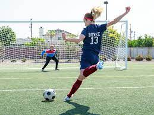
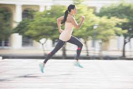
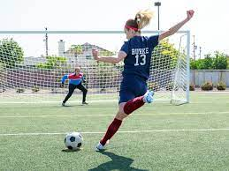
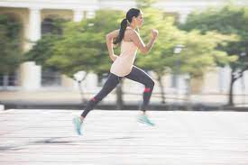

My Hobby
Sports

Sport refers to any form of competitive physical activity or game that aims to use, maintain or improve physical ability and skills while providing enjoyment to participants and, in some cases, entertainment to spectators. Sports can, through casual or organized participation, improve one's physical health. Hundreds of sports exist, from those between single contestants, through to those with hundreds of simultaneous participants, either in teams or competing as individuals. In certain sports such as racing, many contestants may compete, simultaneously or consecutively, with one winner; in others, the match is between two sides, each attempting to exceed the other. Some sports allow a "tie" or "draw", in which there is no single winner; others provide tie-breaking methods to ensure one winner and one loser. A number of contests may be arranged in a tournament producing a champion. Many sports leagues make an annual champion by arranging games in a regular sports season, followed in some cases by playoffs.
My faverouite sports out of all are Basketball, football and running. I really enjoy theese sports as they are games that really energise me. Theese are all outdoor games and give me more time to spend with my friends and the outdoors. The main thing that I like in football is that you have to balence yourself while running around the feild wich is very attractive. I really like running as it is an overall exersises and I am personally a fast runner. And I basicaly like basketball as it is a deciplined sport.
 


